Поможем выбрать
Растерялись у витрины – флорист спросит о поводе и подскажет, что взять.
Сотрудница всё подсказала и сделала супер красивую упаковкуАлександра Кушнарёва, отзыв покупателя
4,3 Магазин цветов · Тверь, Новочеркасская, 50
Расскажите, кого поздравляете, – соберём букет под этого человека
Не знаете, что выбрать? Флорист подскажет на месте или по переписке, соберёт букет, напишет открытку и привезёт её вместе с цветами.
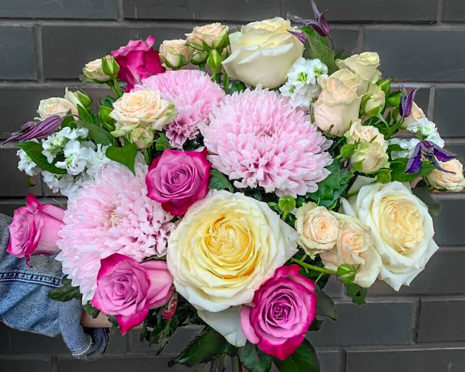
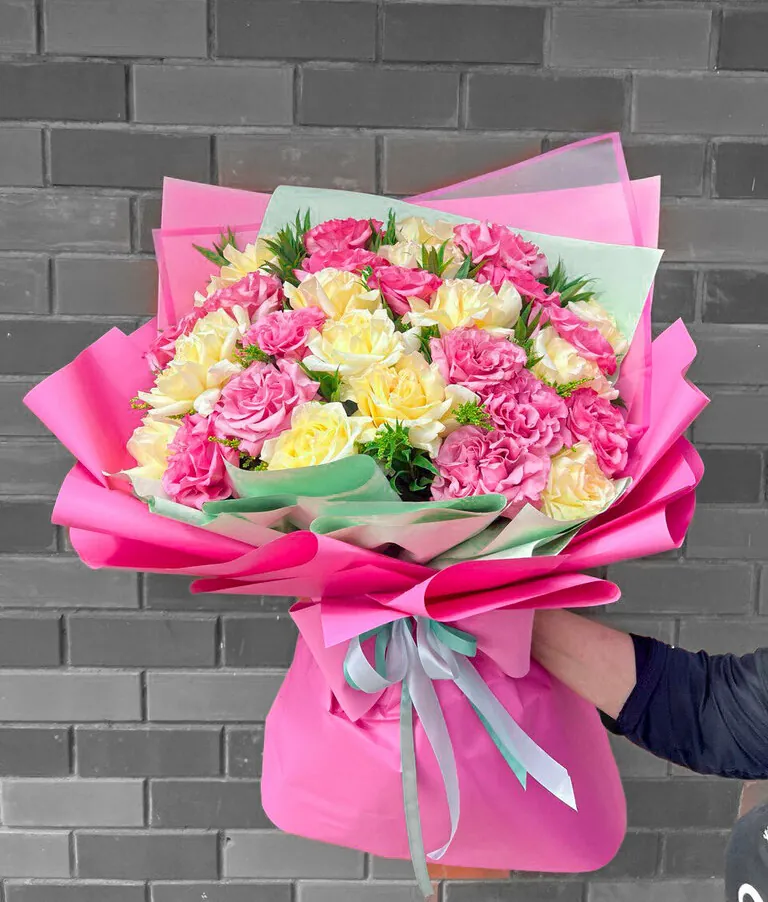
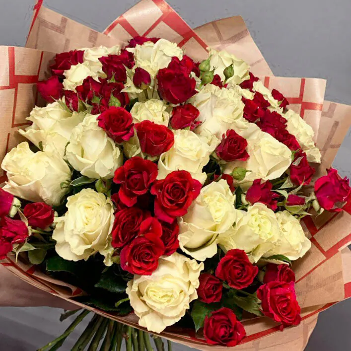
Почему выбирают нас
За что благодарят покупатели в отзывах на Яндекс Картах.
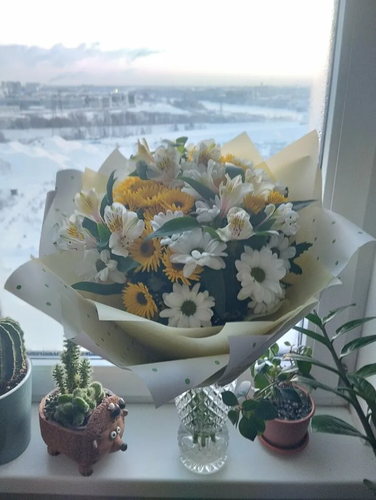
Растерялись у витрины – флорист спросит о поводе и подскажет, что взять.
Сотрудница всё подсказала и сделала супер красивую упаковкуАлександра Кушнарёва, отзыв покупателя
Расскажите, что любит тот, кого вы поздравляете, – букет соберут под него.
Озвучил что любит жена и ребята собрали то что жену порадовало)Андрей Козлов, отзыв покупателя
Напишите в WhatsApp или Telegram – обсудим букет и доставку, даже если не можете зайти сами.
Оформлял заказы дистанционно с доставкой.Андрей Козлов, отзыв покупателя
Продиктуйте текст – флорист подпишет открытку и приложит к букету.
Предложили приложить открытку - они писали её по моей просьбе.Евгений Ильинов,, отзыв покупателя
Растения в горшках для дома и в подарок.
все два моих самых любимых комнатных растения отсюдаДарья Сергеевна, отзыв покупателя
Букеты и цены
Пять букетов из карточки магазина. Состав указан, чтобы вы знали, за что платите.
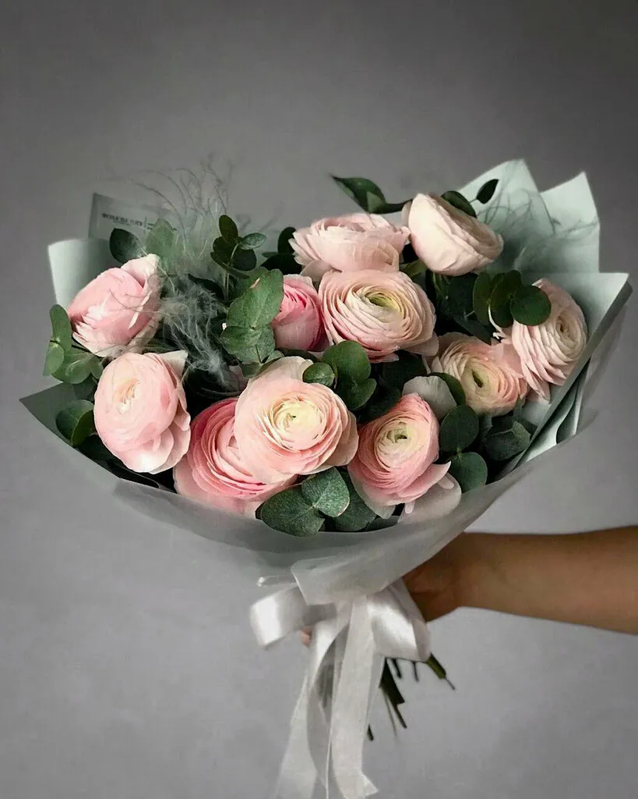
Цены из карточки магазина на Яндекс Картах. Нужен букет на другую сумму – напишите, флорист предложит варианты.
Работы
Фото из карточки магазина. Нажмите, чтобы рассмотреть.
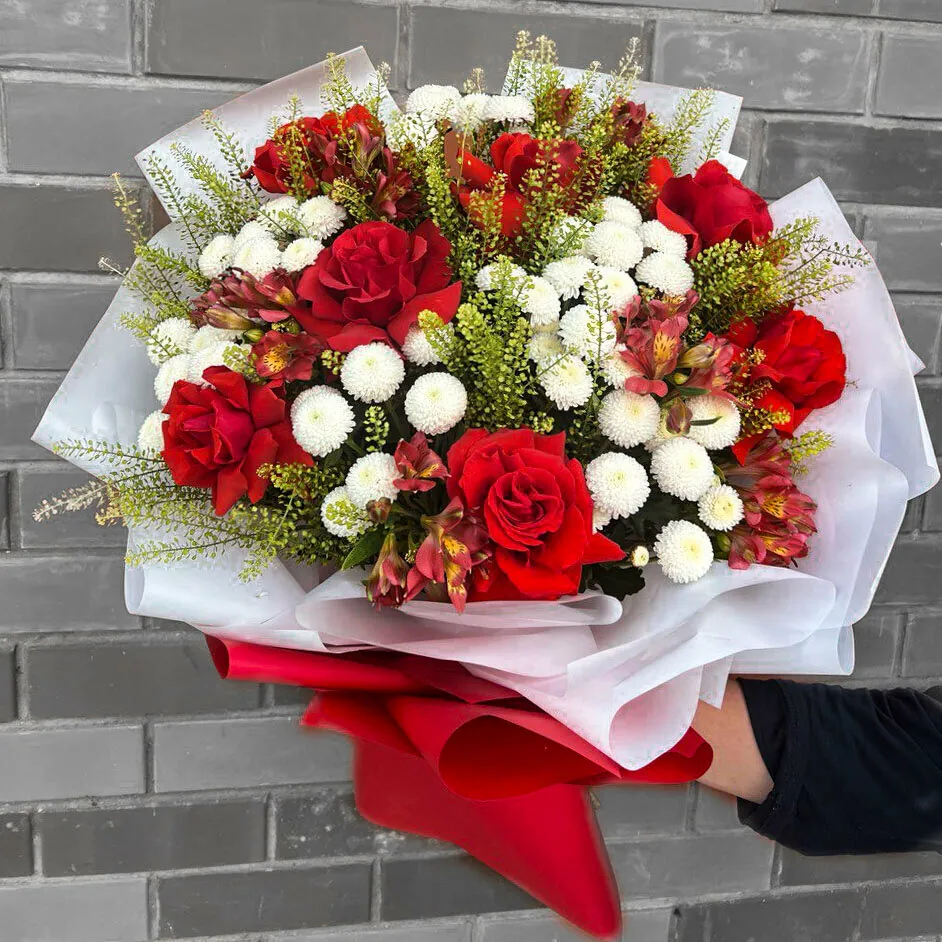
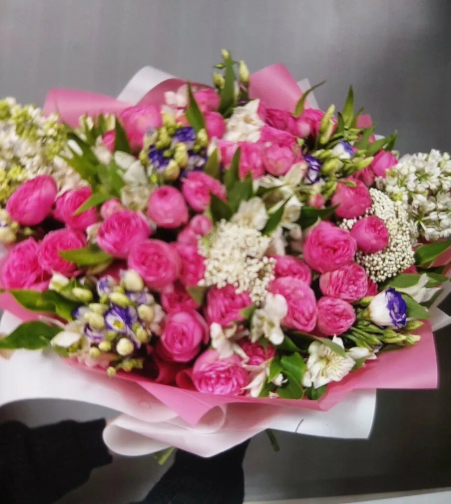
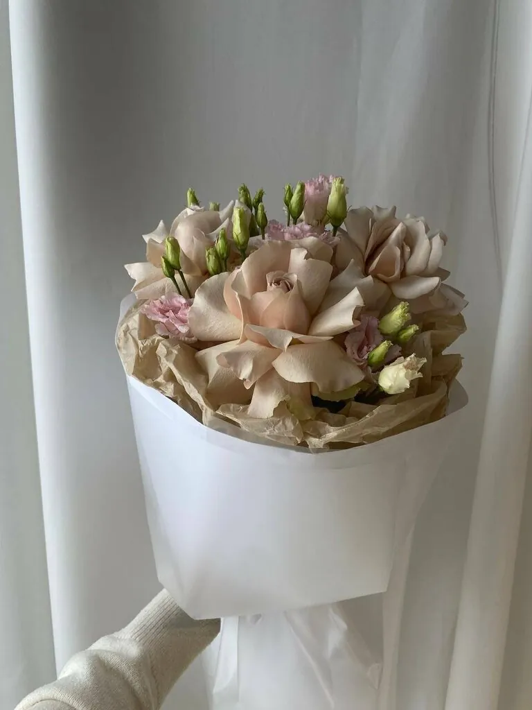
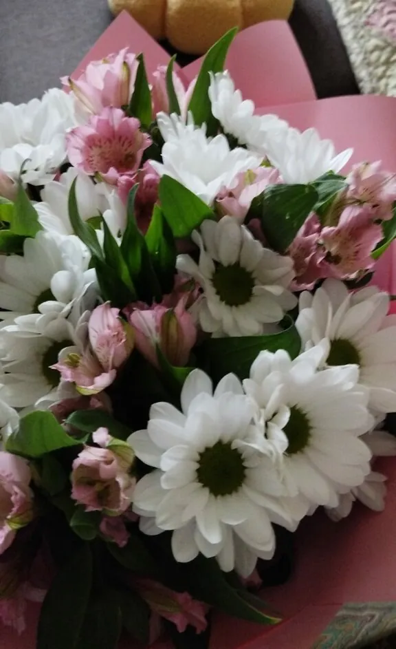
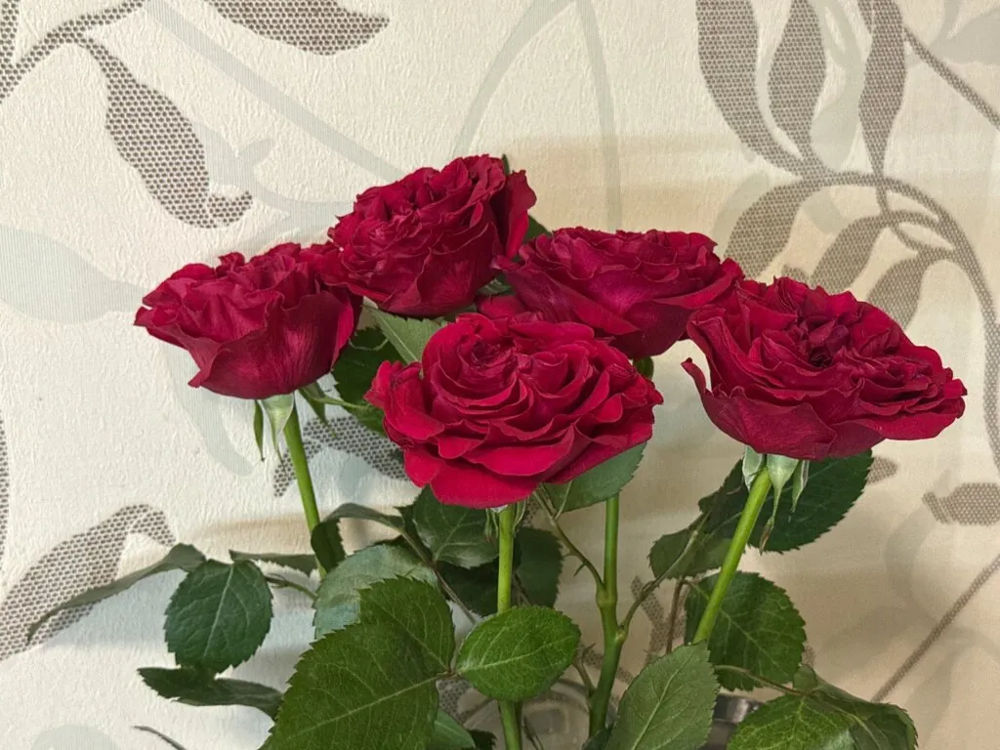
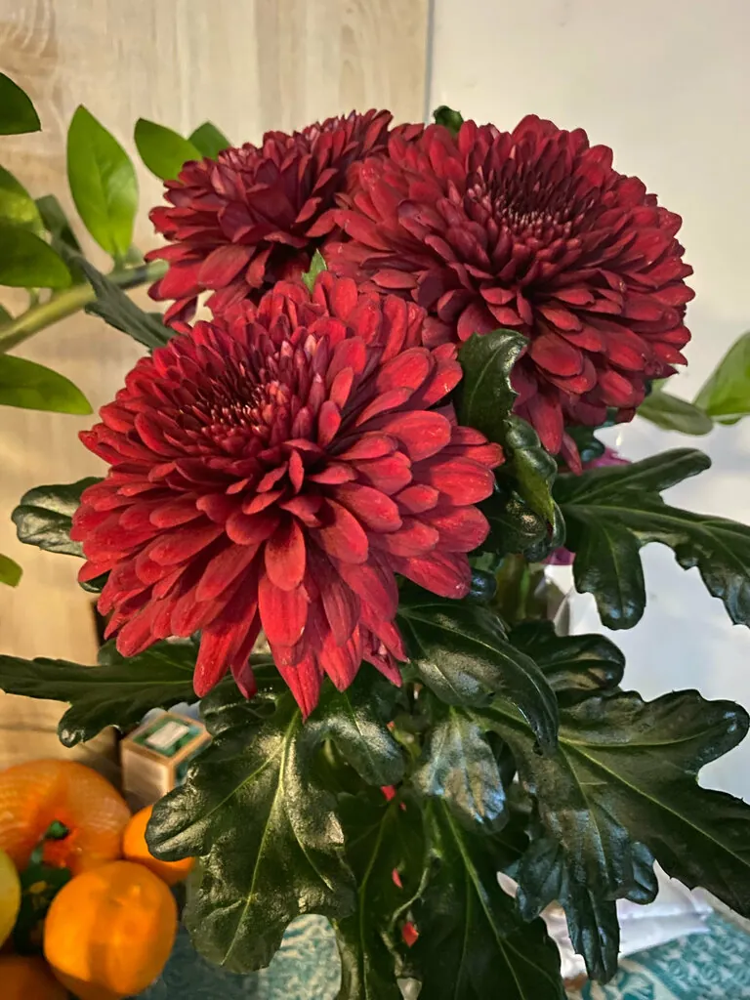
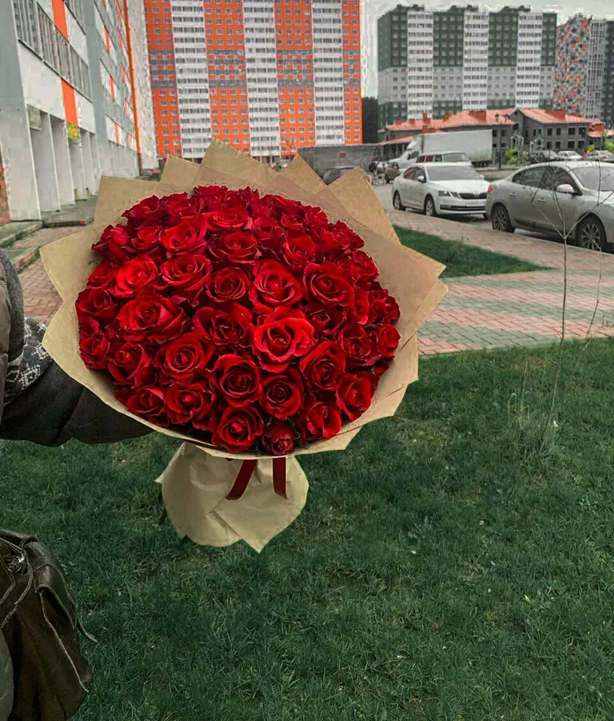
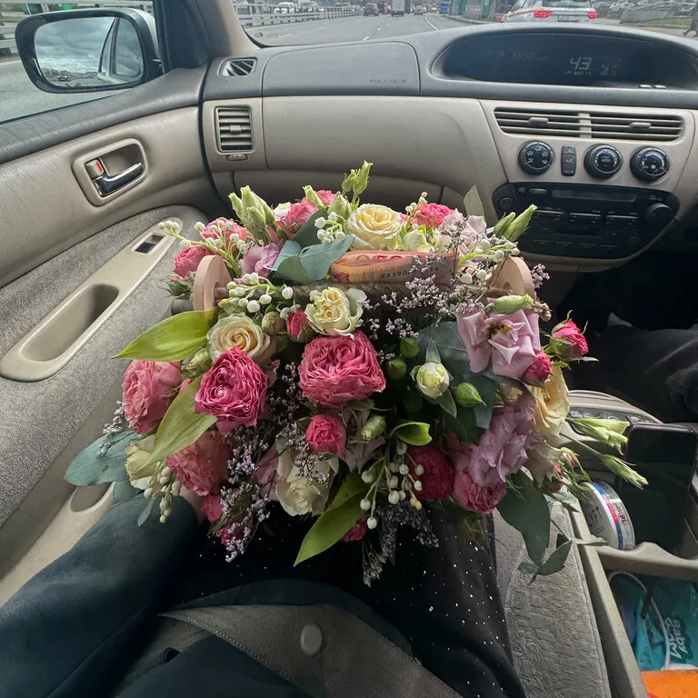
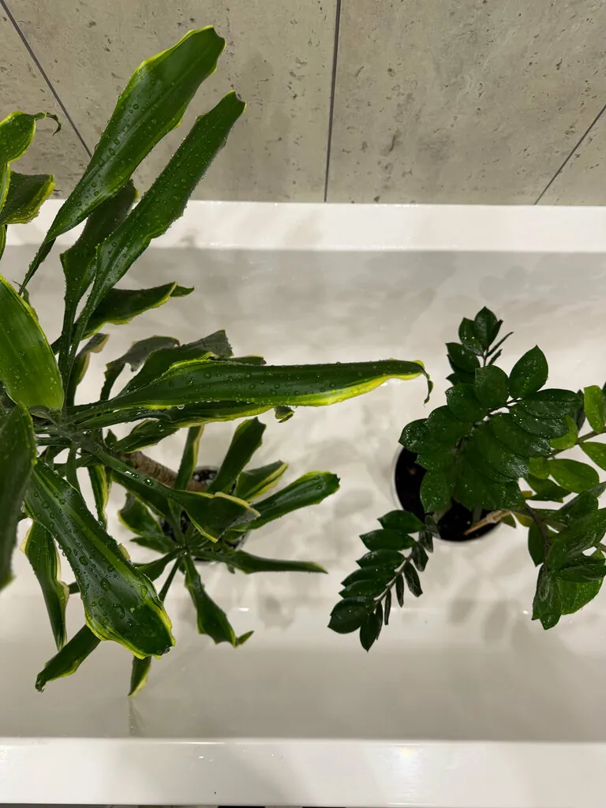
Магазин продающий положительные эмоции)))
Андрей Козлов, отзыв на Яндекс Картах
В магазине
Что ещё есть в магазине на Новочеркасской – по карточке на Яндекс Картах.
Отзывы
Вчера первый раз сама выбирала букет для мамы. растерялась немного. Сотрудница всё подсказала и сделала супер красивую упаковку ✨ Сразу видно, что работают очень добрые и классные люди. Огромное спасибо! Мама счастлива, я тоже))
Магазин продающий положительные эмоции))) Оформлял заказы дистанционно с доставкой. Всегда идут на встречу и учитывают все особенности. Составляют красивые композиции. Озвучил что любит жена и ребята собрали то что жену порадовало) Качественный сервис, пунктуальные и ответственные специалисты - мастера своего дела! Советую!!!
Лучший цветочный, который я когда-либо видел.Большой выбор . Цветы всегда свежее 😍 Сервис доставки на высшем уровне, проконсультировали, предложили букеты, обговорили доставку. Предложили приложить открытку - они писали её по моей просьбе. Доставили букет без задержек. Это практически магия .
Это место - моя отдушина 🌿🤍 тут работают чудесные , добрые люди , которые с большой любовью относятся к своему делу🥹❤️ все два моих самых любимых комнатных растения отсюда. Когда я их взяла они были такими маленькими, а сейчас разраслись и украшают и дополняют мой дом. Скоро вернусь еще за новым растением. Спасибо, что вы существуете и радуете своих клиентов 🌿😍
🙏Спасибо что помогли с выбором прекрасного букета. Покупал для мамы. Очень понравился ваш магазин и душевный подход. Обязательно еще загляну 🙂 Всем рекомендую 👍
Покупала букет для кумы, очень хотелось нежные цветы, мне давно советовали этот магазин и я Рада , что зашла к вам . Большое спасибо за эту природную красоту и доброту консультанта 🌿
чудесные букетики, рекомендую, всей семье ходим в зависимости от праздника 😅
Отличный магазин, хороший выбор букетов, покупала на день рождения подруге, цветы свежие , красиво оформили, спасибо сотруднику за оформление!
Несколько раз обращались в этот магазин за цветами. Выбор всегда на любой вкус и цветовую гамму. Бесплатная доставка. Заказ можно сделать и по телефону.
Приветливый персонал профессиональных флористов, которые помогут и посоветуют. Всегда свежие цветы. Так же широкий ассортимент товаров для декора и цветов в горшках. Мне очень нравится
Подарили букет. Цветы стоят уже неделю. Дарят цветы из этого магазина не первый раз. Всегда стоят великолепно. Спасибо флористам за их творческую работу. Всем рекомендую бутик Цветы life!!!
Уже не первый раз пользуемся услугами этого магазина. Очень нравятся цены! Цветы всегда свежие! Заказывали букеты и композиции на Выпускной и Последний звонок для учителей. Были учтены все наши просьбы! Отдельное спасибо за отличное оформление букетов и доставку во время! Всех благ и процветания вашему магазину!
Заказали пожилой маме комплимент на День матери ! Проконсультировали быстро ,оперативно, цена порадовала! Сервис отличный, цветы видно свежие , красивые! Благодарю! Будем обращаться ещё
Мне очень понравилось обслуживаниение в цветочном магазине "Цветы-laif" и хочу вам признаться, что мало где в Твери я видел такую профессиональную работу продовца цветов. Заехал на авось и был приятно удивлён работой и результатом. Мужчины советую от души.
Классное уютное место с отличным выбором свежих цветов! Рекомендую
Отличное место, классные продавцы
Для этого района хороший цветочный
Всё свежее и хорошие флористы!!! Сделали простой букет но с душой !! спасибо большое за вашу работу!!
Мне понравился магазин. Низкие цены, красивые букеты и всегда свежие цветы. Но главное очень приятные флористы. Сам цветочный очень уютный
Цветы life
Напишите в WhatsApp или позвоните: +7 (915) 709-10-25.
Заказ
Новочеркасская ул., 50. Каждый день с 9:00 до 21:00. Доставка: {{условия и стоимость доставки}}
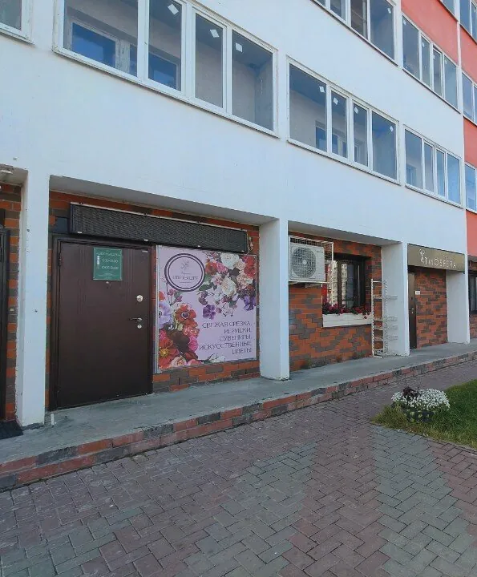
Оставьте телефон – флорист перезвонит, спросит о поводе, цветах и бюджете.